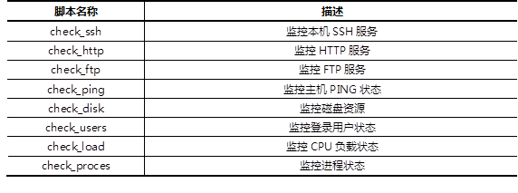

本案例要求先部署一台Nagios监控主机，并安装插件软件包，通过插件命令实现如下监控目标：
使用1台RHEL6虚拟机，安装部署Nagios及配套插件软件包，在本机使用插件命令监控本机服务及资源状态。
在Nagios插件软件包中，包含了大量的监控脚本，常用的插件脚本及对应功能如表-1所示。
表－1 Nagios常用插件及功能
实现此案例需要按照如下步骤进行。
步骤一：部署Nagios监控平台
1）安装Apacha、PHP，配置httpd默认首页为index.php
[root@svr5 ~]# yum -y install httpd php gcc glibc glibc-common gd gd-devel > libpng libjpeg zlib [root@svr5 ~]# vim /etc/httpd/conf/httpd.conf DirectoryIndex index.php index.html index.html.var [root@svr5 ~]# service httpd start [root@svr5 ~]# chkconfig httpd on
2）安装Nagios Core
安装Nagios前需要做些准备工作，提前创建一个无法登录系统的普通账户，创建Nagios组账户并将apache用户加入到Nagios组中，默认httpd配置文件中定义的User（工作账户）为apache。
[root@svr5 ~]# groupadd nagcmd //创建组 [root@svr5 ~]# useradd -s /sbin/nologin -g nagcmd nagios //创建用户 [root@svr5 ~]# usermod -G nagcmd apache //将apache用户加入nagcmd组 [root@srv5 ~]# tar -zxvf nagios-3.2.1.tar.gz -C /usr/src [root@srv5 ~]# cd /usr/src/nagios-3.2.1/ [root@srv5 ~]# ./configure --with-command-group=nagcmd [root@srv5 ~]# make all [root@srv5 ~]# make install [root@srv5 ~]# make install-init [root@srv5 ~]# make install-config [root@srv5 ~]# make install-commandmode [root@srv5 ~]# make install-webconf
3）安装Nagios插件
前面安装的Nagios Core主要提供的是监控系统的核心功能，包含核心检测引擎和一个基本的Web页面，真正执行监控的程序和指令还需要通过安装Nagios插件来获得。
[root@svr5 ~]# tar -zxvf nagios-plugins-1.4.14.tar.gz [root@svr5 ~]# cd nagios-plugins-1.4.14 [root@svr5 nagios-plugins-1.4.14]#./configure --with-nagios-user=nagios \ > --with-nagios-group=nagcmd [root@svr5 nagios-plugins-1.4.14]# make && make install [root@svr5 libexec]# ls /usr/local/nagios/libexec/ //查看监控脚本 check_apt check_ftp check_mrtgtraf check_ping check_time check_breeze check_http check_mysql check_pop check_udp check_by_ssh check_icmp check_mysql_query check_procs check_ups check_clamd check_ide_smart check_nagios check_real check_uptime check_cluster check_ifoperstatus check_nntp check_rpc check_users check_dhcp check_ifstatus check_nntps check_sensors check_wave check_dig check_imap check_nt check_simap negate check_disk check_ircd check_ntp check_smtp urlize check_disk_smb check_jabber check_ntp_peer check_spop utils.pm check_dns check_load check_ntp_time check_ssh utils.sh check_dummy check_log check_nwstat check_ssmtp check_file_age check_mailq check_oracle check_swap check_flexlm check_mrtg check_overcr check_tcp
步骤二：使用监控脚本监控资源
1）监控Web服务器资源
check_http脚本的主要作用是检查Web服务，-I指定需要监控的服务器域名或IP地址，-w设置服务器响应时间的警报值（服务器响应时间超过该值则警告，默认单位为秒），-c设置服务器响应时间的严重故障警报值（服务器响应时间超过该值则提示严重错误，默认单位为秒），更多参数可以使用check_httpd -h来获得。
[root@svr5 ~]# /usr/local/nagios/libexec [root@svr5 ~]# ./check_http -w 5 -c 10 –I 127.0.0.1
2）监控FTP服务
check_ftp脚本的主要作用是检查FTP服务，-H指定需要监控的服务器域名或IP地址，-w设置服务器响应时间的阈值（服务器响应时间超过该值则警告，默认单位为秒），-c设置服务器响应时间的严重错误的阈值（服务器响应时间超过该值则提示严重错误，默认单位为秒），更多参数可以使用check_ftp -h来获得。
[root@svr5 ~]# /usr/local/nagios/libexec [root@svr5 ~]# ./check_ftp -w 5 -c 10 -H 127.0.0.1
3）监控SSH服务
check_ssh脚本的主要作用是检查SSH服务，-H指定监控的主机名称或IP地址，-p指定SSH服务的端口号信息。
[root@svr5 ~]# /usr/local/nagios/libexec [root@svr5 ~]# ./check_ssh -H 127.0.0.1 –p 22
4）监控根分区使用情况
check_disk脚本的主要作用是检查磁盘使用情况，-u设置磁盘存储空间的单位（可以使用的单位有：kB、MB、GB、TB，默认单位为MB），-w设定存储剩余空间的警告提示的报警值，-c设定磁盘剩余空间严重错误的报警值，-p指定监控的分区挂载点。-w和-c除了可以监控磁盘的剩余空间外，还可以监控剩余磁盘的百分比如，-w 50%，-c 40%。
[root@svr5 ~]# /usr/local/nagios/libexec [root@svr5 ~]#./check_disk -u MB -w 9000 -c 5000 -p /
5）监控登录用户数量
check_users脚本的主要作用是检查当前系统登录账户的情况，-w设置警告的阈值，-c设置严重错误的阈值。
[root@svr5 ~]# /usr/local/nagios/libexec [root@svr5 ~]# ./check_users -w 5 -c 8
6）监控本机运行的进程数量
check_procs脚本的作用是监控本地进程，-w设置进程数量警告的阈值，-c设置严重错误的阈值。该脚本时可以使用--metric设置监控类型，默认监控进程数量，--metric=CPU则监控进程占用的CPU百分比，任何一个进程占用CPU百分比超过-w设置的值将出现警告信息。
[root@svr5 ~]# /usr/local/nagios/libexec [root@svr5 ~]# ./check_procs -w 100 -c 120 //监控进程数量 [root@svr5 ~]# check_procs -w 10 -c 20 --metric=CPU //监控CPU占用
沿用练习一，通过调整Nagios服务端配置，实现以下目标：
默认安装完Nagios Core和nagios-plugins之后，我们就可以直接使用脚本命令来监控本机资源，如果还希望直接使用Nagios监控平台实现动态监控本机资源的话，还需要修改Nagios的配置文件，重点配置文件如下：
实现此案例需要按照如下步骤进行。
步骤一：修改配置文件
1）修改监控命令配置文件
在该文件中使用define command指令定义监控命令，command_name定义监控命令的名称，command_line定义监控的功能。定义完成后就可以到特定的监控对象配置文件中调用该监控命令，实现监控的目的。
[root@svr5 ~]# vim /usr/local/nagios/etc/objects/commands.cfg
define command {
command_name check_local_users
command_line $USER1$/check_users -w $ARG1$ -c $ARG2$
}
define command {
command_name check_http
command_line $USER1$/check_http -I $HOSTADDRESS$ $ARG1$
}
define command {
command_name check_ssh
command_line $USER1$/check_ssh -H $HOSTADDRESS$
}
2）修改监控对象的配置文件（多个监控对象可以创建多个文件）
该文件中使用define host定义监控对象，包括被监控主机的主机名、IP地址、别名等。使用define service定义需要监控的服务，host name定义哪个主机实施监控，check_command定义调用哪个监控命令实现监控。
[root@svr5 ~]# vim /usr/local/nagios/etc/objects/localhost.cfg
define host {
use linux-server
host_name localhost
alias localhost
address 127.0.0.1
}
define service{
use local-service
host_name localhost
service_description Current Users //监控登录用户数量
check_command check_local_users!20!50 //20为警告阈值，50为严重阈值
}
define service{
use local-service
host_name localhost
service_description http server //监控http服务
check_command check_http
}
define service{
use local-service
host_name localhost
service_description ssh server //监控ssh服务
check_command check_ssh
}
3）修改Nagios主配置文件nagios.cfg
通过该主配置文件，加载上面定义的配置文件内容。
[root@svr5 ~]# vim /usr/local/nagios/etc/nagios.cfg .. .. cfg_file=/usr/local/nagios/etc/objects/commands.cfg cfg_file=/usr/local/nagios/etc/objects/contacts.cfg cfg_file=/usr/local/nagios/etc/objects/timeperiods.cfg cfg_file=/usr/local/nagios/etc/objects/templates.cfg cfg_file=/usr/local/nagios/etc/objects/localhost.cfg .. ..
4）修改web页面认证配置文件
[root@svr5 ~]# vim /etc/httpd/conf.d/nagios.conf <Directory "/usr/local/nagios/sbin"> …… …… AuthName "Nagios Access" AuthType Basic AuthUserFile /usr/local/nagios/etc/htpasswd.users Require valid-user </Directory> [root@svr5 ~]# ]# htpasswd -c /usr/local/nagios/etc/htpasswd.users nagiosadmin New password: Re-type new password: Adding password for user nagadmin
步骤二：启动服务，查看监控页面
1）启动Nagios服务
[root@svr5 ~]# /etc/init.d/nagios start Starting nagios:This account is currently not available. done.
2）启动httpd服务：
[root@svr5 ~]# service httpd restart 启动 httpd： [确定]
3）登录监控Web页面，使用浏览器访问http://监控服务器IP地址/nagios
沿用练习二，通过调整Naiogs配置，实现以下目标：
使用Nagios监控其他主机的资源需要使用nrpe扩展，监控拓扑结构如图-1所示。
图-1
实现此案例需要按照如下步骤进行。
步骤一：配置被监控端主机
1）安装nagios-plugins
[root@localhost ~]# useradd nagios [root@localhost ~]# groupadd nagcmd [root@localhost ~]# usermod -G nagcmd nagios [root@localhost ~]# tar -zxvf nagios-plugins-1.4.14.tar.gz [root@localhost ~]# cd nagios-plugins-1.4.14 [root@localhost nagios-plugins]# ./configure [root@localhost nagios-plugins]# make && make install
2）安装nrpe扩展
Nagios监控远程主机资源时需要调用nrpe扩展，因此监控主机和被监控主机均需要安装nrpe。
[root@localhost ~]# tar -zxvf nrpe-2.12.tar.gz [root@localhost ~]# cd nrpe-2.12 [root@localhost nrpe-2.12]# ./configure [root@localhost nrpe-2.12]# make && make install [root@localhost nrpe-2.12]#make install-plugin [root@localhost nrpe-2.12]#make install-daemon [root@localhost nrpe-2.12]#make install-daemon-config [root@localhost nrpe-2.12]#make install-xinetd
3）修改nrpe文件文件
[root@localhost ~]# vim /usr/local/nagios/etc/nrpe.cfg command[check_users]=/usr/local/nagios/libexec/check_users -w 5 -c 10 //定义监控登录用户数量的警告及严重错误的阈值分别为5和10 command[check_load]=/usr/local/nagios/libexec/check_load -w 15,10,5 -c 30,25,20 //定义监控本机CPU负载的警告及严重错误阈值，负载按最近1分钟，5分钟，15分钟分别计算 command[check_sda1]=/usr/local/nagios/libexec/check_disk -w 20% -c 10% -p /dev/sda1 //定义监控本机磁盘/dev/sda1的使用情况 command[check_zombie_procs]=/usr/local/nagios/libexec/check_procs -w 5 -c 10 -s Z //定义监控本机僵死进程的警告及严重错误阈值分别为5和10 command[check_total_procs]=/usr/local/nagios/libexec/check_procs -w 150 -c 200 //定义监控进程数量的警告及严重错误阈值分别为150和200
4）修改配置文件，启动nrpe服务
[root@localhost ~]# vim /etc/xinetd.d/nrpe //xinet配置文件
service nrpe {
flags = REUSE
socket_type = stream
port = 5666 //定义监听的端口号
wait = no
user = nagios
group = nagios
server = /usr/local/nagios/bin/nrpe
server_args = -c /usr/local/nagios/etc/nrpe.cfg --inetd
log_on_failure += USERID
disable = no
only_from = 127.0.0.1 192.168.170.92 //定义允许哪些主机监控本机
}
[root@localhost ~]# vim /etc/services //指定nrpe对应端口
nrpe 5666/tcp # TCP port service nrpe
[root@localhost ~]# /etc/init.d/xinetd restart
停止 xinetd： [确定]
启动 xinetd： [确定]
[root@localhost ~]# netstat -utnalp | grep :5666
tcp 0 0 0.0.0.0:5666 0.0.0.0:* LISTEN 29488/xinetd
步骤二：配置Nagios监控服务器
1）安装nrpe软件包
[root@svr5 ~]# tar -zxvf nrpe-2.12.tar.gz [root@svr5 ~]# cd nrpe-2.12 [root@svr5 nrpe-2.12]# ./configure [root@svr5 nrpe-2.12]# make [root@svr5 nrpe-2.12]# make install [root@svr5 nrpe-2.12]# make install-plugin
2）修改监控命令配置文件，调用nrpe实现监控功能：
[root@svr5 ~]# vim commands.cfg
define command {
command_name check_nrpe
command_line $USER1$/check_nrpe -H $HOSTADDRESS$ -c $ARG1$
}
3）创建监控对象配置文件
可以使用localhost.cfg作为模板复制，生成新的监控对象配置文件。
[root@svr5 ~]# cd /usr/local/nagios/etc/objects/
[root@svr5 objects]# cp localhost.cfg 49-server.cfg
[root@svr5 objects]# vim 49-server.cfg
define host {
use linux-server
host_name 49server
alias mail.tarena.com
address 192.168.170.49 //定义监控对象为被监控主机IP
}
define service {
use local-service
host_name 49server
service_description PING //监控被监控主机ping状态
check_command check_ping!100.0,20%!500.0,60%
}
define service {
use local-service
host_name 49server
service_description SSH //监控被监控主机的ssh状态
check_command check_ssh
notifications_enabled 0
}
define service {
use local-service
host_name 49server
service_description Current Users //调用nrpe监控用户数量
check_command check_nrpe!check_users
}
define service {
use local-service
host_name 49server
service_description CPU load //调用nrpe监控CPU负载
check_command check_nrpe! check_load
}
define service {
use local-service
host_name 49server
service_description root partition //调用nrpe监控磁盘
check_command check_nrpe!check_sda1
}
define service {
use local-service
host_name 49server
service_description process number //调用nrpe监控进程数量
check_command check_nrpe! check_total_procs
}
define service {
use local-service
host_name 49server
service_description vsftpd server //监控被监控主机FTP服务
check_command check_ftp
}
define service {
use local-service
host_name 49server
service_description httpd server //监控被监控主机HTTP服务
check_command check_http
}
4）修改Nagios主配置文件nagios.cfg
通过该主配置文件，加载上面定义的配置文件内容。
[root@svr5 ~]# vim /usr/local/nagios/etc/nagios.cfg .. .. cfg_file=/usr/local/nagios/etc/objects/commands.cfg cfg_file=/usr/local/nagios/etc/objects/contacts.cfg cfg_file=/usr/local/nagios/etc/objects/timeperiods.cfg cfg_file=/usr/local/nagios/etc/objects/templates.cfg cfg_file=/usr/local/nagios/etc/objects/localhost.cfg cfg_file=/usr/local/nagios/etc/objects/49-server.cfg .. ..
5）重启nagios服务，查看监控页面
重启nagios服务后，进入登录监控页面刷新查看新的监控状态。
[root@svr5 ~]# /etc/init.d/nagios restart